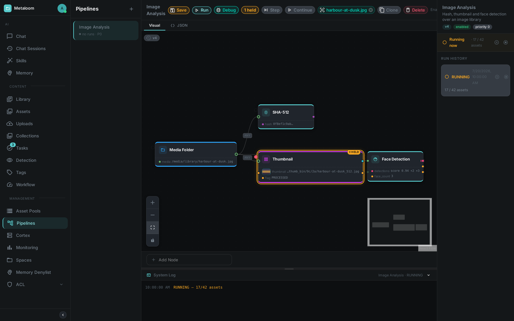
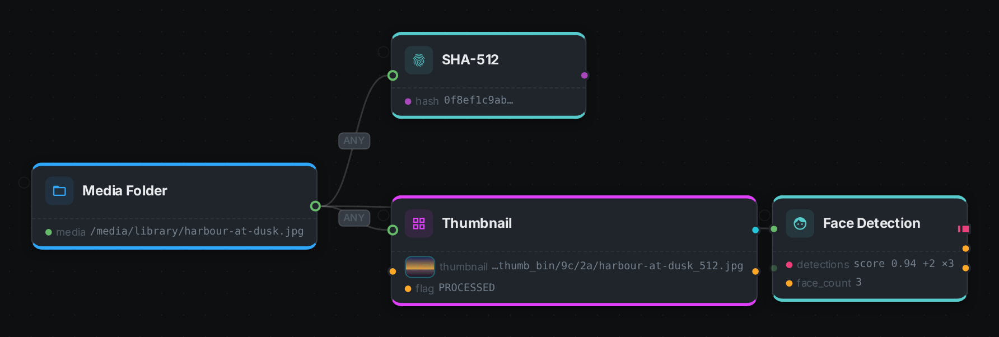
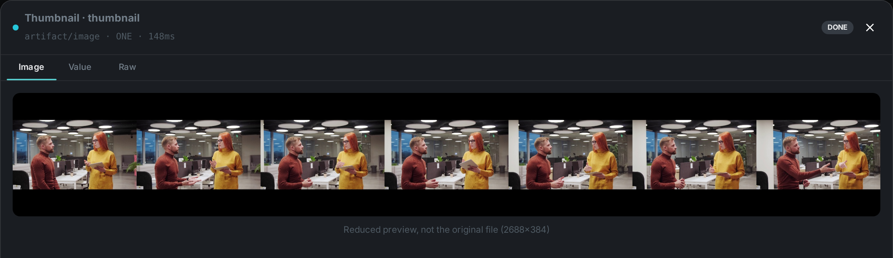
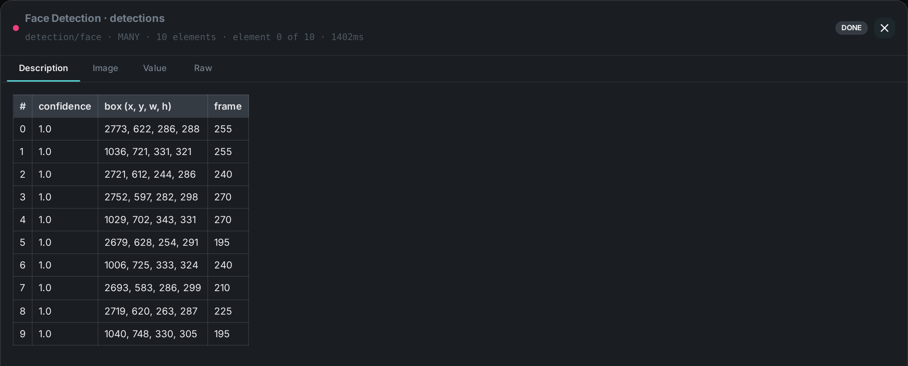
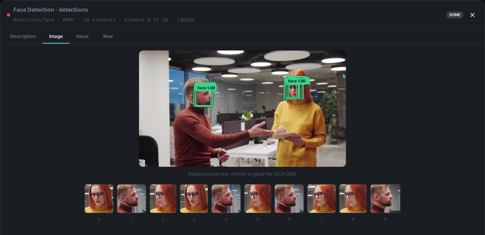
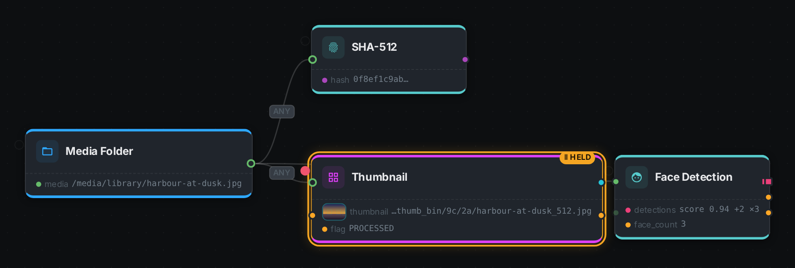

A pipeline is a directed acyclic graph (DAG) of processing nodes applied to media assets. Pipelines are authored in the Loom UI, stored on Loom (versioned in the database), and executed by Loom’s pipeline engine, which delegates the individual node tasks to registered Cortex workers.
|
Tip
|
There is an interactive pipeline editor on this site. It runs entirely in your browser with no server and no account — drag out a graph from the real node catalogue, wire typed ports, and press Play to watch data move through it. It is the fastest way to get a feel for everything on this page, including halting a run at one node. |
Execution Model: Loom Owns the Graph
Earlier versions of MetaLoom pushed a whole pipeline definition to Cortex and let Cortex execute the graph. That is no longer the case. Today:
-
Loom owns the DAG. When a run starts, Loom parses the stored definition into an executable graph and drives it with its own pipeline run engine.
-
Loom selects a worker. It picks a registered, online Cortex instance whose advertised node kinds accept the pipeline’s source kind, and sends it a source task to enumerate media items.
-
Loom dispatches node tasks. For each discovered item, Loom walks the DAG and dispatches one node task per node to a suitable worker; affinity-grouped work goes out as segment tasks. Cortex only ever sees one node (or segment) at a time and replies with a result.
-
Loom tracks the run. Run state (status, counters, durations) is persisted on Loom, so a run survives the process that started it and is reported back to the UI live.
Loom UI ──POST /run──▶ Loom pipeline engine ──SOURCE_TASK──▶ Cortex worker
│ owns the DAG ◀─SOURCE_ITEMS─┘
├──NODE_TASK────────▶ Cortex worker ─NODE_TASK_RESULT─▶
└──SEGMENT_TASK─────▶ Cortex worker ─SEGMENT_TASK_RESULT─▶This is what makes processing horizontally scalable: add Cortex workers to add capacity, and pin heavy node kinds to specific hardware — Loom routes each task to a worker that accepts its kind.
Pipeline Structure
A pipeline version has the following properties:
| Field | Type | Description |
|---|---|---|
|
String |
Human-readable pipeline name. |
|
String |
Human-readable description. |
|
int |
When multiple pipelines are candidates, higher priority wins. |
|
boolean |
Whether this pipeline is active. |
|
boolean |
When |
|
JSON |
The node graph — |
Pipelines are versioned: every save creates a new immutable pipeline_version; older versions can
be viewed and restored. See REST API for the endpoints.
Saving is always something you ask for — the editor never writes your canvas away on its own. Because of that, edits you have not saved live only in your browser, and the editor asks before anything can take them away: picking another pipeline, moving to another screen, or reloading the tab all stop on a confirmation while there are unsaved changes. Cancel it and you are back on your canvas with the edit intact.
Node Graph
The definition is a graph of nodes[] connected by edges[]:
{
"version": 1,
"nodes": [
{ "id": "pn1", "type": "filesystem-source", "name": "File Source" },
{ "id": "pn2", "type": "filter", "name": "Language Filter" },
{ "id": "pn3", "type": "sha256", "name": "SHA-256 Hash" }
],
"edges": [
{ "id": "pe1", "source": "pn1", "sourcePort": "media",
"target": "pn2", "targetPort": "media" },
{ "id": "pe2", "source": "pn2", "sourcePort": "passed",
"target": "pn3", "targetPort": "media", "branch": "PASS" }
]
}-
versionnames the definition format the graph is written in. Loom sets it for you when you save, so you never have to write it by hand. A definition without one is read as version 1, and a definition from a newer Loom than the one you are running is refused with a message naming both versions rather than being partially understood. -
Each node carries a graph
idand atype— the node kind that Loom uses to route the task to a worker that can run it. -
Each edge names a port at both ends:
sourcePorton the producing node,targetPorton the consuming one. Both are mandatory — an edge that only names two nodes does not say which value flows, and is rejected. -
A pipeline has exactly one source node (e.g.
filesystem-source) that enumerates media. -
Filter nodes (
filter) grow one output port per configured bucket and route each item down exactly one of them — so a German branch never receives English. The port is the branch: anything wired to a port that carried nothing is skipped for that item. -
Node kinds map to the built-in Nodes (or your own custom nodes).
Ports
A node declares named, typed input and output ports, and the edges say which output port feeds which input port. Nothing addresses another node by its graph id, so renaming a node in the editor cannot quietly starve its consumer.
A port carries three things:
| Property | Meaning |
|---|---|
Id |
A name local to its node — |
Content type |
Always |
Cardinality |
|
The full port list of every built-in kind is on its page under Nodes, and
GET /api/v1/pipeline/node-descriptors returns the same thing for the kinds your server knows.
Wiring is checked when the pipeline is saved, not when it runs. An edge naming a port that does not exist, two ports whose content types do not agree, a required input with nothing connected, or two edges into an input that takes a single element — each is rejected with a message naming the offending nodes and ports, and no run is created.
Node results with sync enabled are written back to Loom as asset metadata; see Cortex Examples for the persistence path.
Checking a Draft Before You Save It
A definition can be checked without being stored:
POST /api/v1/pipelines/validate
{
"definition": {
"nodes": [
{ "id": "source", "type": "filesystem-source", "source": true },
{ "id": "sha512", "type": "sha512" }
],
"edges": [
{ "source": "source", "sourcePort": "media", "target": "sha512", "targetPort": "media" }
]
}
}The reply is the verdict, not an error:
{
"valid": false,
"errors": [
{
"code": "NODE_TYPE_UNKNOWN",
"message": "Unknown node type: \"sha51\" — not found in descriptor registry",
"nodeId": "sha512"
},
{
"code": "CYCLE",
"message": "Cycle detected in pipeline graph — nodes form a circular dependency"
}
],
"warnings": []
}Three things about it are worth knowing.
A rejected draft still answers 200. You asked a question and got an answer; nothing was
stored either way, so there is no pipeline to clean up after a failed attempt.
Every problem comes back at once. Saving a pipeline reports the first thing wrong with it,
because it is deciding whether to write a version. Validating reports the whole list, so a graph
with four independent mistakes takes one round trip to diagnose rather than four. Each error carries
a stable code, and nodeId or edgeId where the problem belongs to one — which is how the editor
marks them on the canvas.
It runs exactly the checks saving runs. A draft that validates is a draft that saves; that equivalence is the only reason the route is worth using.
warnings never block. The usual one is that no worker is currently online for one of your node
kinds — a fact about your fleet rather than about your graph. The pipeline saves; a run started
before that worker comes back is what would be refused.
Validating requires permission to create pipelines. It is an authoring action, and read access to existing pipelines neither grants it nor is needed for it.
The pipeline editor does this for you: it checks the canvas in the background shortly after you stop editing, lists whatever comes back, and refuses to save a graph the server has rejected.
Running a Pipeline
Trigger a run over REST (or from the UI’s Run button):
POST /api/v1/pipelines/:uuid/run # body: { mediaUuids, path, pathGlobs, dryRun }
GET /api/v1/pipelines/:uuid/runs # run history with status + countersThe response reports whether the run was dispatched, the assigned worker, and the runUuid. If no
suitable online worker exists the run is rejected (503) rather than silently queued.
Choosing what to process
The run request narrows what the pipeline’s source enumerates. The most specific selector wins:
mediaUuids, then pathGlobs, then path.
| Field | Behaviour |
|---|---|
|
A single folder or file. The source compares it against its index and processes only media that is new, modified or moved — so re-running over a large library is cheap. |
|
One or more glob patterns. Always walks the filesystem in full, so use it when you want a complete re-scan or need pattern matching. |
|
Specific assets, resolved to their stored files. |
From the command line these are --dir, --glob and --asset respectively:
metaloom pipeline run my-pipeline --dir /media/libraryPausing and resuming a run
A run in progress can be suspended and later resumed, or stopped for good:
POST /api/v1/pipelines/:uuid/runs/:runUuid/pause
POST /api/v1/pipelines/:uuid/runs/:runUuid/resume
POST /api/v1/pipelines/:uuid/runs/:runUuid/cancelA paused run keeps everything it has done. No further work is handed to workers, and the source
scan stops as well, so a pause genuinely halts the pipeline rather than merely hiding it. Work
already handed to a worker finishes normally. The run’s status becomes PAUSED, and its counters
are preserved.
Cancelling is final: a cancelled run cannot be resumed.
A paused run continues to occupy a worker, so it should be resumed or cancelled rather than left indefinitely.
In the pipeline editor, a run that is currently executing offers a Pause control on the run banner and on its row in the run history; a paused run offers Resume in its place. Because a pause is reversible, Cancel stays available in both states. The controls also follow the run itself: if a run is paused from the command line or from another browser window, every open editor updates on its own.
|
Note
|
Resuming requires the run to still be live on the server. A run whose server was restarted while it was paused is restored in the paused state and can be resumed as normal; one that was lost entirely must be started again. |
From the command line:
metaloom run pause <run-uuid>
metaloom run resume <run-uuid>
metaloom run cancel <run-uuid>Dry-Run Mode
When dryRun = true, nodes execute but do not persist results — useful for validating a pipeline
against real media without side effects. It is a property of the pipeline definition (or the run
request).
Live Progress (WebSocket)
While a run executes, the engine emits structured tracking events which the UI consumes live:
ws://<loom-host>:8092/api/v1/pipelines/events/ws # optional ?pipeline=<name> and ?run=<uuid> filtersEach event identifies the pipeline, node, media item, status (STARTED, COMPLETED, SKIPPED,
FAILED) and duration. The Loom UI subscribes to this stream to display live processing progress and
per-node statistics.
Two optional filters narrow the stream: ?pipeline=<name> restricts it to one pipeline, and
?run=<uuid> to a single run. Both may be combined. The stream carries no history — it delivers
only what happens after the connection opens.
The command line consumes the same stream:
metaloom run follow <run-uuid>
metaloom pipeline run my-pipeline --dir /media --followDebug Mode
It is often unclear what a given node is actually doing to your media. The pipeline editor has a Debug toggle for exactly this: with it switched on, each node shows live counters while a run is in flight — how many items it is working on right now, how many are queued behind it, and how many it has completed, failed or skipped in total.

The toggle is remembered between sessions and changes nothing about how a pipeline runs. With it off, the editor looks and behaves exactly as it does while you are designing a graph, so the extra detail never gets in the way of drawing one.
Counters update roughly once per second. That is deliberate: a run over a hundred thousand files across a ten-node graph produces around a million individual node results, and reporting each one separately would flood the browser without telling you anything a running total does not.
Seeing what a node produced
Counters tell you how much a node did, not what it did. For that, open a run from the run history and pick one of the files it processed. The editor then shows, on each node, the values that node emitted for that file — one line per output, labelled with the output’s name.

Above, one video clip has been carried through the graph. The source reports the file it found, the
hash node its digest, the thumbnail node the contact sheet it wrote and a DONE flag, and face
detection ten faces with the first of them summarised. That is four nodes' worth of "what did you
actually do", on the graph, for one specific file.
Results are always tied to one file. "What did the transcription node produce" has no answer until you say for which piece of media, which is why choosing an item is the first step. The chosen file stays named in the toolbar and the results stay on the graph when you close the run panel, so you can study the pipeline with them in place. Clear them with the × on that chip.
Selecting a node opens its Results tab, which adds what the compact view leaves out: how long the node took, how many attempts it needed, whether it was given up on after repeated failures, and the error if it failed. Outputs are kept even for a failed or skipped run of a node — they are usually what explains why it did not finish.
A node that processes several things from one file — one entry per detected face, say — is listed once per entry, so you can tell which one failed rather than only that something did.
Previews of produced media
Media that a node creates — a thumbnail, a cropped face, a generated image — is written to the machine that produced it, not to Loom. To let you actually look at it, a run started with Debug on asks each worker to send back a small picture of what it made, which then appears inline next to that output.
Previews are small on purpose: at most 512 pixels on the longest edge, and dropped entirely if they would still be too large. When that happens the output says so rather than appearing empty — "too large to preview" and "this output produced nothing" are very different answers, and the editor never confuses them.

They are also generated only for runs you started with Debug on, and are discarded together with the run they belong to. A preview is a debugging aid, not a copy of your media: it is deliberately lossy, and it is not a way to store or serve what a pipeline produces.
Audio and video outputs are still shown as file references — only images are previewed today, which is why the clip itself appears as a path while everything made from it appears as a picture.
Looking at one result closely
Clicking any output on a node opens it full size. What you get depends on what the output actually holds, not on what it is nominally typed as:
-
an image, when the node produced one;
-
a description, when the node wrote one for itself — several nodes explain their own output far better than a generic rendering can, and face detection is one of them;
-
a table, when the output is a list — one row per detected face, per transcript segment, per chunk;
-
the value, formatted and syntax-coloured;
-
and Raw, which is always available and shows exactly what was recorded, whatever else applies.

The most informative view opens first, so you rarely have to choose. Use Raw when you want to see precisely what a downstream node will receive, with nothing interpreted for you.
The table above is not a generic rendering of the detection list: face detection wrote it, which is why it has a confidence column and a box column rather than a row of unlabelled numbers. Any node can describe its own output this way, and when one does, its description is what opens first.
Detections as pictures
For a node that finds things in an image, a table still leaves the two most obvious questions unanswered — where in the picture, and what does it look like. The Image view answers both: the frame the boxes were measured against, with each box drawn on it, and one thumbnail per detection underneath.

Those thumbnails are cut from the source at full resolution rather than from the reduced frame above, which matters more than it sounds: in 4K footage a face occupies a few percent of the picture, so a crop taken from a 512-pixel preview would be barely thirty pixels across.
The caption under the picture is worth reading on a video. Detection runs on sampled frames, so
the ten thumbnails below the picture are ten detections spread across several moments, while the
boxes drawn on the picture are only the ones measured against this frame. face_count counts
neither: it is the number of distinct subjects the node clustered those detections into, which is
two. Ten crops, ten detections, two people.
Watching detection happen
Ten detections and two people is the kind of arithmetic that only makes sense once you have seen the clip. Below is the same node’s output over the same footage, painted in as the video plays.
Two things are worth watching for.
Boxes appear and then dissolve. Nothing is tracking anyone. The node samples every fifteenth frame, so between two samples there is simply no new answer, and a box that fades out is saying "this is the most recent thing reported here" rather than following a face across the picture.
Long stretches have nothing at all. The node keeps only the sharpest faces it finds, so a clip where two people are mostly turned away from the camera yields a handful of detections at the moments they were most legible — not a box on every frame. That is the same behaviour the numbers above describe, seen from the other side.
The strip underneath is the ten most recent detections, newest first, each one the crop the node actually cut. Selecting one jumps the clip to the frame it came from.
|
Note
|
The clip is a six-second excerpt of the source, and both the excerpt and every box come from a real run of the face detection node — the frame numbers shown are the source’s own. |
Halting at a node
Pausing stops the whole run. Often what you want is narrower: let everything run normally, but stop here, at this one node, and show me what it produced before anything downstream touches it.
In Debug Mode every node grows a small dot in its left margin. Click it to halt there. The dot is a setting on the run in front of you — it is never saved into the pipeline, so nobody else’s runs are affected and the next person to open the pipeline sees it exactly as you left it.
When a file reaches a halted node, the node still runs. That is the point: stopping before it ran would leave you with nothing to look at. What stops is everything after it. The node is ringed in amber, its results open automatically, and the run waits.

Two controls appear once something is waiting:
Step lets a single file through. Whatever it unblocks runs immediately, and if the next node is also halted, the run stops again there. This is how you walk one file through the graph a node at a time and watch what each one does to it.
Continue releases everything waiting. The halt stays set, so the next file to arrive stops here too — that is what makes it a halt rather than a one-off. To stop halting altogether, click the dot again.
While a run is halted it also stops looking for new files, so a halt on a folder of 100 000 images does not enumerate all of them while you read the first result.
|
Tip
|
A halt anywhere in the graph makes the nodes around it run one at a time instead of being grouped together for speed. That is deliberate — grouped nodes hand their intermediate results straight to each other without reporting them, which is exactly what you stopped to see. Expect a debugged run to be slower than the same run without a halt. |
Changing a setting and trying again
Stopping at a node answers what did it produce. The question that follows is almost always and what would it produce if I changed this — and answering it by editing the pipeline and starting a new run means waiting for everything before that node to happen all over again.
So while a node is waiting, its settings can be changed and the node run again over the same file. Select the halted node and its settings panel says it is waiting, with Re-execute underneath. Change a value, press it, and the node runs a second time over exactly the inputs it had the first time.
The face detector is the clearest example. It ignores faces turned further away from the camera than Max Face Angle, which defaults to 30°. On footage of two people talking to each other, that finds nothing at all — and "no faces here" and "faces I was told to ignore" look identical from the outside. Raise the angle to 90°, press Re-execute, and the same frame comes back with both faces found.
Each attempt is kept. Once a node has been run more than once an Attempt selector appears, and switching between attempts switches what the canvas and the results panel show — which is the whole point, since a value is only good or bad compared with the one before it.
|
Important
|
Settings changed here apply to this run only. They are not saved into the pipeline, so you can try five values without anyone else’s runs changing and without leaving a half-finished experiment behind. When a value turns out to be the right one, Save to pipeline writes it into the pipeline as a new version — that is the only button in this panel that changes anything permanent. |
A setting is checked before the node runs, against the range that node declares: asking a thumbnail node for 99 columns is refused immediately rather than becoming a failure to find in a log.
Only a node that is currently waiting can be re-executed. Once you press Step or Continue its result has gone downstream, and re-running it would mean unpicking everything that already used it.
Running a Node Without a Pipeline
Not every question is worth drawing a pipeline for. "What does the vision model say about this photo?", "what is the hash of this file?", "read the text out of this page" — these are questions about one asset, and answering them by saving a pipeline, running it, and then deleting it again leaves clutter behind for a result you wanted once.
Node runs answer them directly. You pick a node, point it at assets you have already selected, and Loom dispatches it to a free Cortex worker exactly as it would inside a pipeline. Nothing is added to your pipeline list.
There are two shapes, because the work has two shapes:
- Probe a single asset
-
One node against one asset, answered while you wait. If the node is slow, you are told so rather than left hanging, and pointed at the second form.
- Run a graph over a set
-
Several nodes over many assets. You get a job straight away and the work continues in the background; you can watch its progress, read partial results as they arrive, and stop it at any point. When it finishes you get a notification, so you can start a long pass and walk away.
What it does and does not record
By default a node run records nothing. The result comes back to you and the asset is left exactly as it was, which is what makes it safe to try something. If you want the outcome kept, ask for it — the result is then written to the asset’s processing history, marked as an ad-hoc result so it can never be confused with, or overwrite, what a scheduled pipeline produced.
What you cannot run this way
Nodes that produce files — thumbnails, generated images, rendered audio — are not available as node runs. Those nodes write their output next to themselves on the worker, and Loom cannot yet fetch it, so you would be told the node succeeded and handed nothing. They remain available inside a normal pipeline, where the file is consumed by the next node on the same worker.
Running nodes this way is a separate permission from editing pipelines. An administrator can grant someone — or the assistant — the ability to design pipelines without the ability to spend processing time, or the other way round.
Custom Nodes
Any node kind can be added by a custom Cortex worker that advertises it. See Cortex Examples for authoring a node in Java, assembling a custom daemon, or implementing a worker in Python.